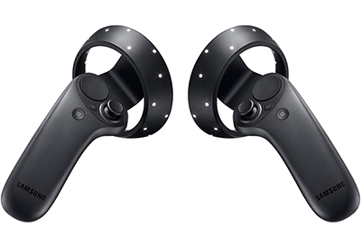
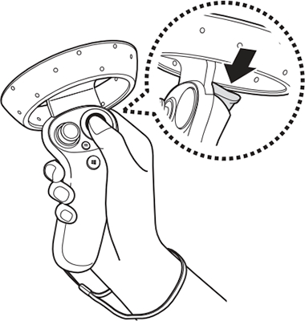
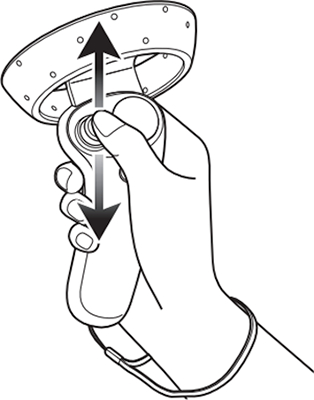
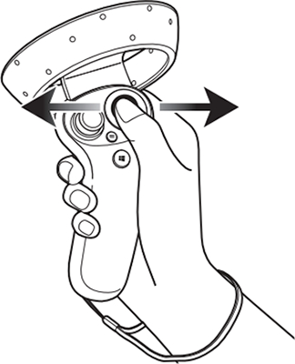
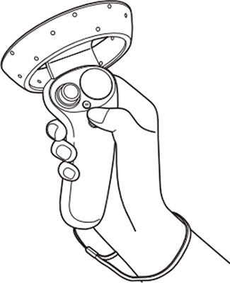
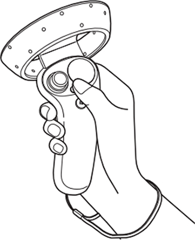
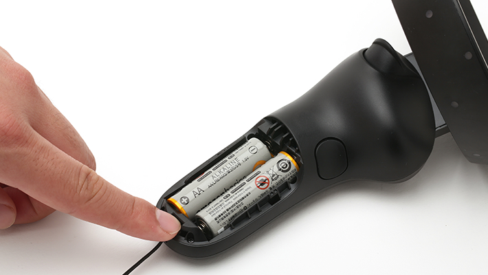

How To Set Up/Use the Samsung Odyssey
This page will guide you through how to set up, adjust, and use your new Oculus Rift headset, sensors, and controllers.
Equipment List
This is what you will find when you open the box:
- HMD cable
- One Samsung Odyssey headset
- Two Samsung Odyssey controllers
How To Set Up the Samsung Odyssey Headset
- When you use a laptop, connect the power adaptor for stable performance
- Connect the HMD cable to the USB 3.0 port and display support port on your computer
- It is not recommended to use additional extension cables except the HMD cable
How To Use the Samsung Odyssey Controllers

The controllers are used to interact with objects in VR. There are several buttons on each controller:
- Press-Select an item by pressing the touchpad or trigger

- Push the Thumbstick-Push the thumbstick back and forth to move your location. Push the thumbstick forward hard to make the controller beam appear. You can teleport to the location where the controller beam is pointing

- Drag on the Touchpad-Move to the next or previous item. Scroll up or down on a webpage or list

- Launch the Start Screen-Press the Window button to launch the Start screen

- Launch the Menu-Press the Menu button to launch the menu of each function

How To Charge the Controllers
The Samsung Odyssey controllers run on batteries, so if your controllers are dead, simply replace the batteries in them
How To Use the Lanyards
The lanyards are used to keep the controller from flying form your hand while moving. While holding the controller, insert the lanyard's thread from the top to the bottom hole. Next, loop the lanyard through the thread, and then tug the lanyard to fasten it in place. Place the lanyard on your wrist, and then adjust the lock to tighten the lanyard comfortably around your wrist.
How To Pair the Controllers
- Press the Windows button for 2 seconds to turn on your controllers
- Remove the battery cover and then press and hold the Bluetooth pairing button until the lights flash
- On your computer, navigate to Windows > Settings > Devices > Add Bluetooth or other device > Bluetooth and select the controller to pair
- Once succefully connected, both controllers should appear on the screen

Dismantlement
To dismantle the Samsung Odyssey, follow these steps:
Unplugging Cords
- Unplug the HMD cable connecting your Samsung Odyssey headset to your computer
- The Samsung Odyssey controllers instantly disconnet when the HMD cable is unplugged